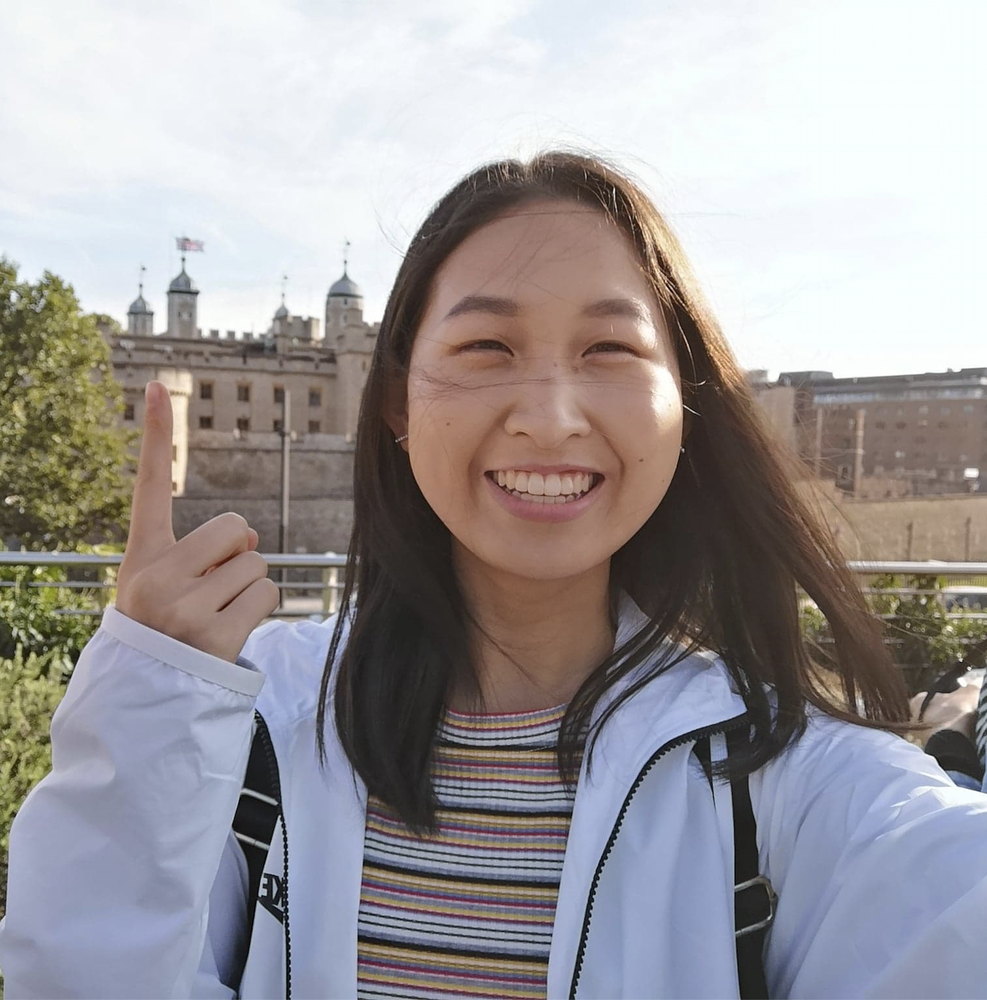

WHO'S SOPHIE?
I'm Sophie, and I want to bring big ideas to life!
...and that's how I found the amazing world of software development. With a single laptop, you can make almost anything - the entire world is at your fingertips! The possibilities are endless and I'd like to give everything a try - specific items currently on my bucket list include working in the fintech industry, developing projects for the social good, dabbling in some design, and perhaps taking a stab at product management.
Right now, I am a happy third year student at the University of Waterloo studying Computer Science and Business Administration. When I'm not busy doing homework, I like to enjoy my time playing badminton, hiking with friends, trying out new snacks, updating my music playlists, and voluntarily falling down the wikipedia rabbit hole 😅
If you'd like to chat about anything or say hi, feel free to contact me through any of the links below!
Thanks for stopping by!
✹